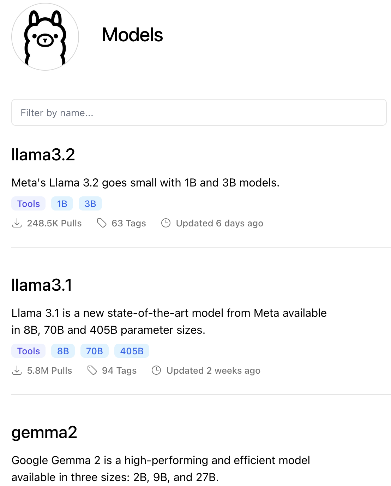

GenAI overview:
From hands-on GenAI today into a neuro-inspired future
AI+X summit: GenAI track
Oct 4, 2024
 Philipp Denzel, Benjamin Grewe
Philipp Denzel, Benjamin Grewe
Slides on my website

Who Am I? - Philipp Denzel
- trained physicist, turned ML researcher
- research scientist at the Centre of Artificial Intelligence at ZHAW
- like to tinker with computers and bleeding-edge technology

Outlook
What is Generative AI?
- Quote Arthur C. Clarke's third adage:
Any sufficiently advanced technology is indistinguishable from magic.
What is Generative AI?
- method to (re-)create original content
- an immensely useful tool!
In fact, this presentation was almost exclusively created with GenAI tools*!
\(*\) through reveal.js code generation prompting using
- local tools: ollama/ellama, aider-chat, FLUX.1-schnell
- external tools: fastflux, elevenlabs, heygen
LLMs at home with Ollama
- Ollama installs and runs open-source models
- on various hardware with
- Quantization: lower bit float representation
- LoRA: efficient method to update weights

Screenshot on 24/10/02
Context learning

Credit: ML6
GenAI tools
There's an AI for that
Image generation
- Stable Diffusion
- with AUTOMATIC1111 Web UI
- FLUX.1
- open version available: github.com/black-forest-labs/flux
- fast (under 2 seconds)
- efficient and accurate (details like fingers and text)
Stable Diffusion fails at writing and hands
- Prompt: "Futuristic background including an astronaut and planets with "AI+X 2024" on a large banner"
FAST.1 is faster and more accurate
- Prompt: "Futuristic background including an astronaut and planets with "AI+X 2024" on a large banner"
Audio generation
- Music generation: Suno, Udio, brev.ai, …
- collapses to stereo-typical genres without detailed prompts
- with lyrics explicit content at times
"A background track fitting for a conference on Generative AI"
"Rise of the Machines" by brev.ai
Audio generation
Sound generation: Meta's AudioCraft
- "Audience chatting before a speech by a scientist
until an authoritative person loudly yells "silence" in a deep voice."
- "Audience chatting before a speech by a scientist
Speech generation: ElevenLabs
- Voice created through prompt: "Move Philipp Denzel's register towards a male tenor, and make it slightly more nasal. The voice should speak relatively slowly, and pronounce words well."
Video generation with Sora
- Prompt: New York City submerged like Atlantis. Fish, whales, sea turtles and sharks swim through the streets of New York.
… but sometimes has issues with physics
- Prompt: New York City submerged like Atlantis. Fish, whales, sea turtles and sharks swim through the streets of New York.
Deep Fakes?
GenAI ?= AGI
- main traits of AGI: reason, knowledge, common sense, plan, efficient learning
- Use Turing test:
- an interrogator (C) and two witnesses
- one witness is a machine (A), the other is human (B)
- human witness helps the interrogator
- machine witness tries to confuse the interrogator
Credit: Juan Alberto Sánchez Margallo/Wikimedia Commons
Turing test on GPT-4 with children
- performed early 2024 at University of Zurich
- by colleagues at the Institute for Computational Science (Julian Adamek, Prasenjit Saha)
- Moderator
- prompts the LLM instructions in advance
- relais the questions and answers
- rejects questions on recent news
- two session with multiple rounds
- an adult with limited exposure to LLMs
- a group of school children
Turing test reimagined (AI-generated with FLUX.1-schnell)
Turing test on GPT-4 with children
- Results:
- children need only a single question to identify the machine
- the adult a bit longer but still has high accuracy
- children say:
"ChatGPT doesn't speak like a human, but is still a great tool to do homework…"
- PhD student jokingly concludes:
"The AI apocalypse is not (yet) imminent then…"
Lessons Learned
- current state of GenAI components enable many applications
- performance is amazing at times
- but inaccurate and limited in more complex tasks
- How can we move forward?
References, Links, and Credits
- Website slides: phdenzel.github.io/assets/blog-assets/024-aix-2024/slides.html
- AI icons: taken from TAAFT